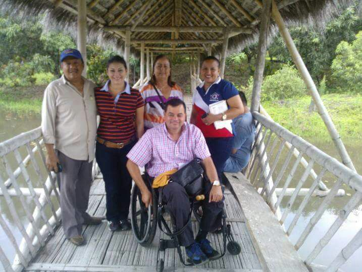
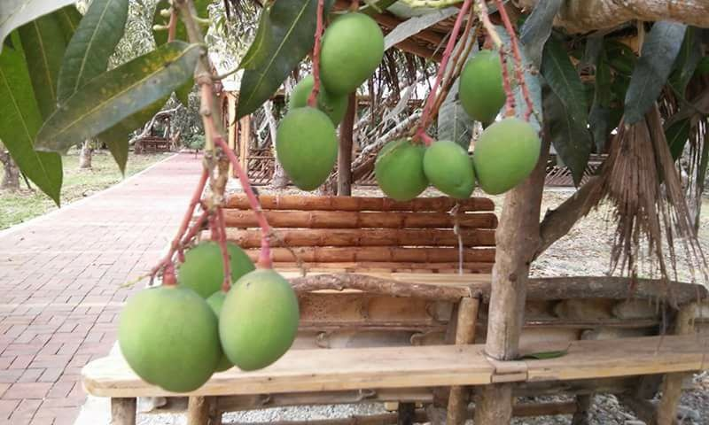
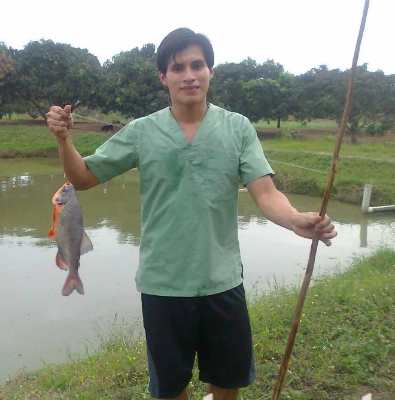
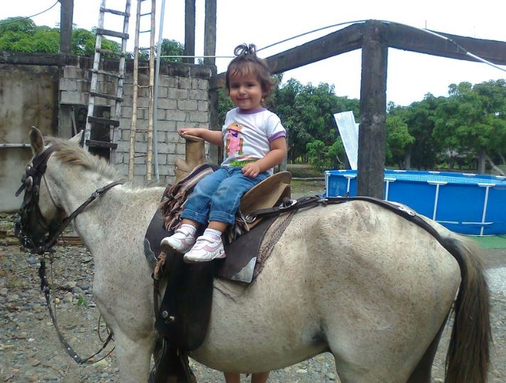
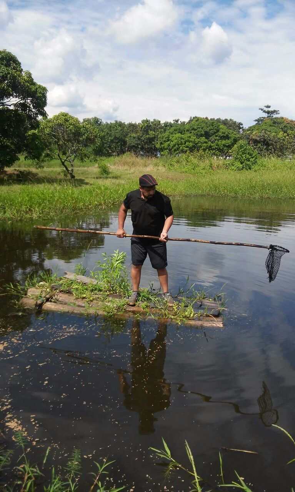

¿Quienes somos?

En primer lugar, somos un complejo agroturistico megadiverso, que se desarrolla en una superficie de 420 mil metros cuadrados aproximadamente y comprende cinco grandes etapas que se han ido desarrollando sucesivamente una tras la otra.
Su construccion demora mas de tres años,dependiendo del financiamiento.La propietaria será una compañía anónima, de capital privado, que tendrá como principal aporte el terreno donde se desarrollará el proyecto.
Su nombre se debe a que en la PRIMERA ETAPA , existe un bosque de una de las más deliciosas y universales frutas EL MANGO En efecto, en esta primera etapa nos encontramos con un bosque de aproximadamente 1500 árboles de esta deliciosa fruta, en donde existen variedades tales como:
- TOMMY ATKINS
- EDWARD
- HADEN
- DAVID HADEN
- KENT
- IRWIN
- VAN DIKE
- TOLWER
- DE CHUPAR
- DE CANELA
- FILIPINO

Esta fruta que nos ha dado la mano del Creador , es el deleite de hombres, mujeres y niños, quienes las podemos comer directamente o como parte integrante de varios y deliciosos platos, también constituye alimentos para aves, insectos, cuadrúpedos y hasta los peces comen de ella por tener un rico sabor y efectos benéficos para la salud, en el caso de los hombres.- Vale recordar que en esta parte del hemisferio, la producción normalmente comienza a partir del mes de septiembre de un año y finaliza en el mes de marzo del siguiente año ( aproximadamente 7 meses).
Recorridos

Pero el complejo turistico Palo de Mango no es solamente eso. Es mucho mas que eso, es un complejo que comprende cinco grandes etapas, que se irán desarrollando paulatinamente y que a manera de introducción las hemos detallado con su nombre genérico. La Segunda etapa será todo un cpmplejo acuatico, Poli Deportivo, Gastronomico, de aventura, de diversion y descanso
La tercera etapa, será una aventura impresionante, inolvidable en la selva junto a TARZAN , su compañera, sus animales, en donde el visitante o socio , realizará Safaris dirigidos. La cuarta etapa, comprende un parque zoologico, en donde coexistirán, como en el EDEN, las distintas especies animales, en su habitad natural. Además se desarrollarán los paseos a caballo, en burro, en bueyes, en carretas, existirá un mini coso para RODEO MONTUBIO, el socio podrá ordeñar la leche para su café, espumante y calientita.-


La QUINTA ETAPA, se realizará en medio de un bosque de árboles de TECA, madera preciosa que se produce en el sitio, además el visitante se podrá deleitar visitando un bosque de árboles de una de las frutas emblemáticas de la Provincia de Manabí, esto es: el TAMARINDO , mismo que estando en periodo de cosecha todos los visitantes y socios lo podrán degustar, ya sea al natural o en deliciosos jugos.